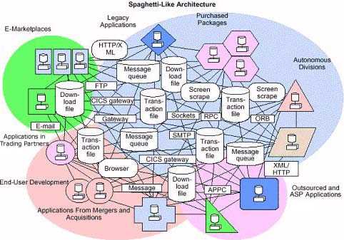
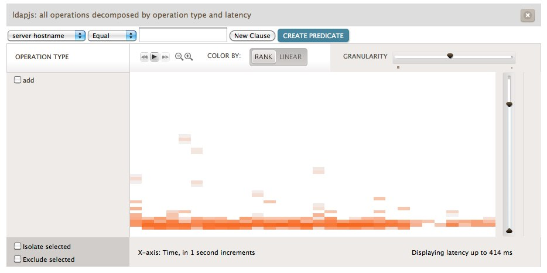
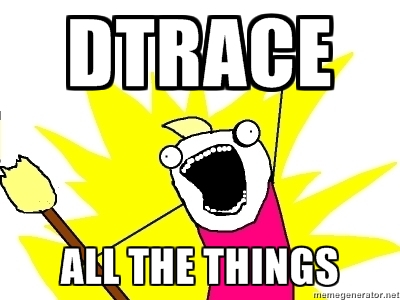

DTrace Your Node.js JS
Mark Cavage
dtrace.conf April 03, 2012
Me
- @mcavage (Twitter)
- mcavage (GitHub)
- mcavage at gmail dot com
Just to level-set (i.e., What's Node.js?)
What's Node.js?
- Server-side Javascript.
- Always non-blocking (threads aren't exposed to you)
- And networking/HTTP are first class
Why would you use Node.js?
- You want to spin up some new network service (relatively) quickly
- You want it to talk to other things
- And you care about performance/scalability
Bored now. What's this talk about?
- (Briefly) What DTrace is available for node itself
- How to DTrace your application with node-dtrace-provider
- Some example usage of dtrace-provider (ldapjs/restify)
DTrace the Node core
- Basically, you've got USDT probes for socket, http and gc
- Those let you get the basics of what your app is doing
- But it's a pretty course granularity
Some One-liners (thanks @bmc)
Cool - do I need anything else?
- As said before, those probes tell you a lot about what the interpreter sees
- They don't tell you much about your app's components
- Wouldn't you like to know if say a DB call or a FS call were what was slowing your app down?
What if your infrastructure looks like this?
Suppose you had some (crappy) REST api...
Wouldn't it be nice to see that slowdown?
In action?
Wait. What?
- There was some magic in restify
- Under the covers it creates DTrace probes for all the handlers in a server
- The rest of this talk is about showing you how to do that
Thanks Chris Andrews!
$ npm install dtrace-provider
- Allows you to DTrace for your Node.js application code
- Installs everywhere; useful on Solaris derivations/OSX
- You don't need to be root
What is node-dtrace-provider?
Is this magic? How does this work?
- Dynamically create tracepoints in the running process
- Dynamically creates DOF to describe the provider to the kernel
- ioctl said DOF into the kernel
- For more information, see Chris' blog
How do you use it?
So, how good are you nodecat?
Node's read vs system read
Pretty decent in terms of interpreter overhead (μs)
(Tangent) What's with the goofy read:return?
- man -s 2 read says if (read(fd) == 0) then EOF
- node however decides to keep calling it. and calling it. and calling it.
- Hence, that janky D script to get the timing of the first return 0 (since the system is ready to move on)
Bah! Show me some examples!
ldapjs: hello world server
Show me the probes!
Some search one(ish) liners
Fancy: Visualization of ldapjs
That said: it's pretty course granularity
- This was my first pass at integrating dtrace into node app code.
- Really there's just start/done for each LDAP operation
- Lets us see what a server is doing, but not very well broken out
Take two: restify
- Restify lets you build a REST api by pipelining handlers
- After having done ldapjs, what I really wanted was to be able to visualize all the steps in a request
- DTrace start/done probes get inserted for every distinct handler
A (slightly) bigger exampe
Now we're talking!
The same D script as before...
Shows us a lot more data
Every time a route/handler is added
- restify sets up a start/done DTrace probe for the route
- plus a start/done probe for each handler in the route
- plus a start/done probe for the shared handlers to track in that route
- You can glob to your heart's content in D scripts, since the names are predictable
mapping code
Route runner fires
Some tips on how to use dtrace-provider...
Ride on top of other probes
Whenever possible, piggyback on system probes by using an argument you can correlate (like filename in the nodecat example)
Picking arguments
There's no support for argument structs (yet), and you only get 6 arguments to play with, so choose your args wisely
Build into your framework
ldapjs and restify are two examples where DTrace isn't in user code at all, but provides substantial value.
Easy latency tracking
- For any given probe, add -start and -done so latency can be calculated
- Where it makes sense, make arg0 be a monotonically increasing integer
What would be nice in the future?
- JS objects as probe arguments (i.e., structs)
- Being able to tack on more probes on the fly (i.e., after calling enable())
- Minimizing the disabled probe effect
And with that...
Questions?
/
#